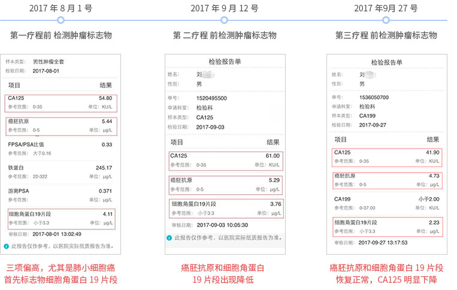
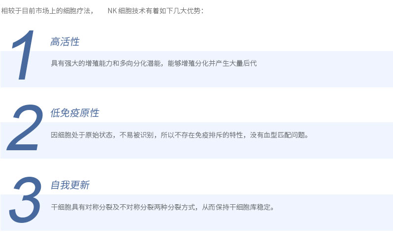
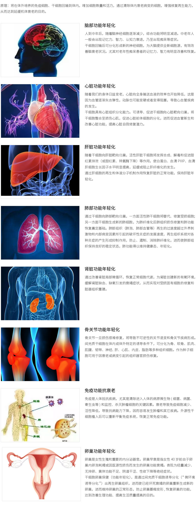
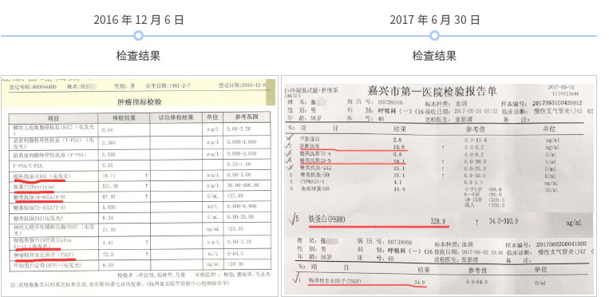
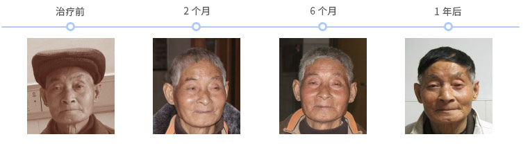
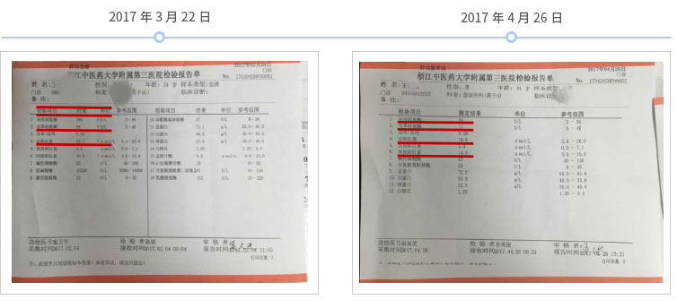
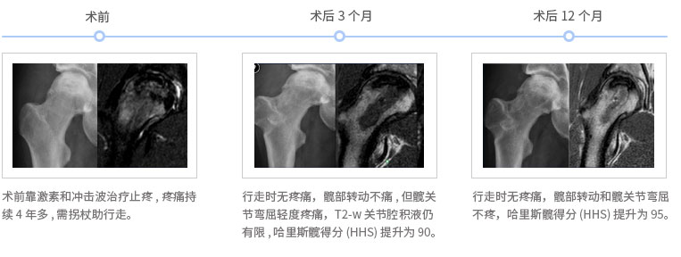
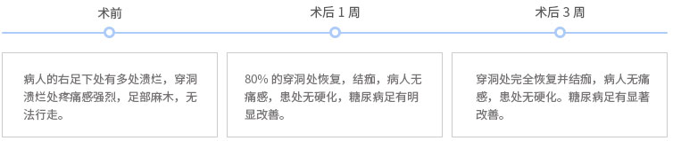
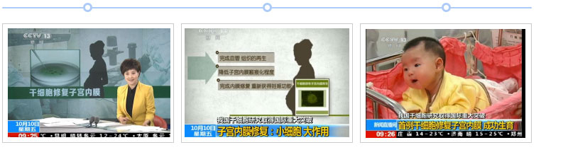

首页
关于我们
完整疗愈健康管理中心
资讯
联系我们
完整疗愈健康管理中心
通过生物电，生物共振，能量学，心理等方法，综合对客人进行细胞层面的保养，
尤其是线粒体ATP层面上的保养。
产后修复
基因治疗
细胞治疗
生物共振
营养医学
疾病检测
治疗案例
首页
细胞治疗
治疗案例
治疗肿瘤
一、细胞治疗肺癌
L主任，72岁，萧山医院返聘主任，非小细胞肺癌，进行了手术切除和化疗疗程，病情稳定。治疗后4个月时，复查肿瘤标志物出现升高，有复发迹象。
2、制定方案：
每个月一个疗程免疫细胞方案
3、效果
8月11号进行第一次细胞组合方案，9月12号第二个疗程，10月12号进行第三个疗程，每个疗程之前进行肿瘤标志物检测，肿瘤标志物明显下降，甚至恢复正常值。病人食欲精神睡眠明显好转。

二、细胞治疗胃癌
1、病情描述
Y女士，70岁。胃癌并多处淋巴结转移，已做过手术切除。身体虚弱，行走需要搀扶。
2、制定方案：
每个月一个疗程免疫细胞方案
3、效果
2016.12.6回输后身体状态明显提升，精神变好，体力提升，可以爬一小时坡路，生活质量提高。后续每半年进行一个疗程，目前状态保持良好。
三、细胞治疗食道癌
1、病情描述
W先生，1938年生，2013年发现食道癌晚期，然后进行手术放化疗治疗。治疗后并不理想， 生命几度垂危。
2、制定方案：
每个月一个疗程免疫细胞方案
3、效果
2016年再一次急救抢救过后，进行免疫多细胞疗程，疗程过后状态逐渐恢复，目前病情稳定。
干细胞治疗优势

干细胞抗衰与器官年轻化

细胞改善肺功能
一、细胞改善肺损伤
1、病情描述
Z先生，55岁。肺损伤严重，陈旧性肺部疾病，走路就呼吸不畅，爬楼梯等呼吸困难。此外，癌胚抗原、铁蛋白、糖类抗原19-9、细胞角蛋白19片段、肿瘤特异生长因子等多项肿瘤因子偏高，身体机能差，存在肿瘤风险。
1、病情描述
一年4次免疫多细胞抗癌疗程。
3、效果
疗程后身体感觉良好，吃饭睡觉都感觉比以前舒适很多，肺部逐渐顺畅，胸闷气短状况减轻，肿瘤标志物得到控制，未继续上升。

细胞改善甲状腺功能
一、细胞改善甲状腺肿大
1、病情描述
H女士，38岁。甲状腺结节，手摸有肿块，并有疼痛。同时胃炎，HPV高危阳性。平时工作忙，工作强度非常大，身体超负荷。方案设计：免疫多细胞+基础细胞再生一个疗程。
2、制定方案：
制定免疫细胞抗肿瘤+干细胞功能再生疗程。
3、效果
2016.12.7进行免疫细胞疗程，免疫多细胞回输后当天晚上，低烧发热，第二天甲状腺肿块消退，痛感消失。年关工作非常忙碌，强度很大，自己感觉身体状态很好，顺利度过忙碌期。2017.2.24进行再生疗程。
二、细胞改善甲减
1、病情描述
S女士，39岁，家庭妇女，3个女儿，想生男孩，长相漂亮，但是身体情况比较差，甲状腺甲减比较严重（甲状腺球蛋白抗体110），睡眠不好，胃炎，咽炎，偶有心悸，产后体重急剧下降，增肥困难，体检报告：CA199、CA242结果偏高，胰腺有问题。
2、制定方案：
制定免疫细胞抗肿瘤+干细胞功能再生疗程。
3、效果
疗程结束一周之后睡眠改善，脸色变好，心情很愉快。两周左右，就体现了比较好的效果。顾客睡眠、体力、精力都得到了很好的改善。食欲变好，体重开始有所增加。45天后，顾客抽血检查了甲状腺球蛋白抗体，下降到接近正常范围值（52/30<），甲减症状明显下降。
细胞改善肝功能
一、干细胞治疗肝硬化
1、病情描述
A先生：67岁，酒精性肝硬化患者。 2009年开始每月一次肝昏迷，今2010年7月开始 每半个月肝昏迷一次 ；睡眠要吃药，要有专门护工护理。治疗前检查：乏力中度、腹胀中度、慢性肝病面容中度、皮肤巩膜黄染中度、脾肿大中度、头发全白。
2、制定方案：
制定免疫细胞抗肿瘤+干细胞功能再生疗程。
3、效果
治疗后（二个月）检查结果：乏力现象无、腹胀无、慢性肝病面容轻度、皮肤巩膜黄染轻度、脾肿大轻度、后脑已长出一片黑发。已出院，无肝昏迷现象；现可自己打水烧饭、并下地做农活。白蛋白从27增加到 37，肝纤维化透明质酸从755.6降低到552.1。

二、干细胞治疗乙肝
1、病情描述
W先生，33岁，乙肝感染，多年来肝功能大多不正常，2017年2月4号肝部不适进行检测，3月下旬进行细胞疗程，4月底进行复检。
2、制定方案：
制定免疫细胞抗肿瘤+干细胞全年疗程。
3、效果
月底进行复检，肝功能指标完全恢复。目前状态良好，乙肝接近转阴，后续每半年进行一个疗程增强巩固。

细胞治疗骨关节疾病
一、干细胞治疗股骨头坏死
1、病情描述
病人, 男性，33 岁, 股骨头坏死多年，Ficat Stage IIB, 哈里斯髋得分 (HHS) 为 80, 关节积液极少。结论：股骨头坏死I期、II期病人效果最好，晚期效果稍差。
2、制定方案：
自体骨髓间充质干细胞介入移植治疗股骨头坏死。
3、效果
干细胞治疗后，患者行走无疼痛，髋部转动和髋关节弯屈不疼，关节炎显著改善。

细胞治疗神经系统疾病
一、干细胞治疗视神经发育不良
1、病情描述
美国患者，男，19个月时因“视力障碍1年”入院。入院时发现视力障碍，伴双眼球轻度水平震颤，粗测视力双眼前30cm可看清手动。无凝视，不能爬行、站立。
2、制定方案：
间充干视神经再生疗程
3、效果
干细胞治疗后，患儿可看到一米处物体并追视，用手牵拉可由卧位改为坐位，运动功能及视力较治疗前明显好转，出院一个月后，患儿能够更好地控制眼睛和追随物体，双眼可凝视。
二、干细胞治疗帕金森综合征
1、病情描述
全身静止性振颤14年，震颤幅度为重度，四肢肌肉强直，不能运动达两年，进行随意运动启动困难，运动减少。
2、制定方案：
间充干视神经再生疗程
3、效果
接受干细胞治疗后，患者自觉饮食，睡眠改善，患者双下肢震颤减轻，震动的幅度降为中度；自发、自动运动及运动幅度较治疗前增多。能够在他人的帮助下缓慢走动。精神状态改善，效果良好。
细胞治疗肌营养不良
一、干细胞治疗进行性肌营养不良
1、病情描述
中国患者，孪生兄弟，10岁，治疗前平卧时不能抬头，坐起费力，不能站立及行走，四肢肌力3级，体重分别为17、19公斤。
2、制定方案：
间充干视神经再生疗程
3、效果
接受干细胞后，头可抬离床面，坐起明显灵活，可独立站立，并可步行20米左右，四肢肌力达到4级，食欲增强，体重各增长3公斤。
细胞治疗糖尿病及糖尿病并发症
一、干细胞治疗糖尿病足
1、病情描述
病人 H 女士，患糖尿病多年，并发展为糖尿病足，无法行走，并面临截足。
2、制定方案：
干细胞疗程
3、效果
穿洞处完全恢复并结痂，病人无痛感，患处无硬化。糖尿病足有显著改善。

细胞改善女性生殖系统
一、细胞修复子宫内膜
1、病情描述
病人 F 女士，宫腔黏连，子宫内膜瘢痕化，导致不孕, 求子多年未果。
2、制定方案：
干细胞疗程
3、效果
干细胞修复子宫内膜，成功受孕生子。

治疗案例
治疗肿瘤
改善肺功能
改善甲状腺功能
改善肝功能
治疗骨关节疾病
治疗神经系统疾病
治疗肌营养不良
治疗糖尿病并发症
改善女性生殖系统